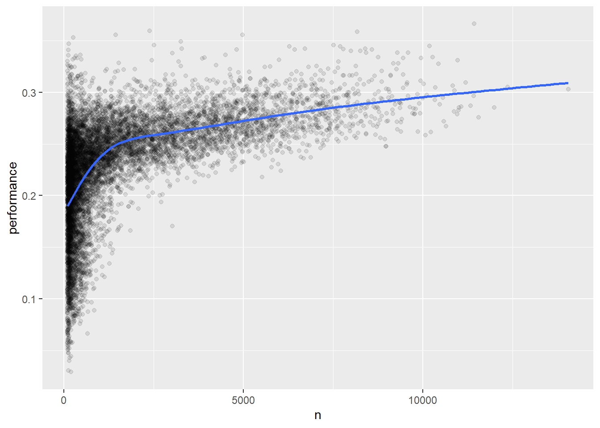

library(nycflights13)
library(tidyverse)Self Practice 2: R for Data Science
3 Data transformation
flights# A tibble: 336,776 × 19
year month day dep_time sched_dep_time dep_delay arr_time sched_arr_time
<int> <int> <int> <int> <int> <dbl> <int> <int>
1 2013 1 1 517 515 2 830 819
2 2013 1 1 533 529 4 850 830
3 2013 1 1 542 540 2 923 850
4 2013 1 1 544 545 -1 1004 1022
5 2013 1 1 554 600 -6 812 837
6 2013 1 1 554 558 -4 740 728
7 2013 1 1 555 600 -5 913 854
8 2013 1 1 557 600 -3 709 723
9 2013 1 1 557 600 -3 838 846
10 2013 1 1 558 600 -2 753 745
# ℹ 336,766 more rows
# ℹ 11 more variables: arr_delay <dbl>, carrier <chr>, flight <int>,
# tailnum <chr>, origin <chr>, dest <chr>, air_time <dbl>, distance <dbl>,
# hour <dbl>, minute <dbl>, time_hour <dttm>The most important difference between tibbles and data frames is the way tibbles print; they are designed for large datasets, so they only show the first few rows and only the columns that fit on one screen. There are a few options to see everything. If you’re using RStudio, the most convenient is probably View(flights), which will open an interactive scrollable and filterable view. Otherwise you can use print(flights, width = Inf) to show all columns, or use glimpse():
glimpse(flights)Rows: 336,776
Columns: 19
$ year <int> 2013, 2013, 2013, 2013, 2013, 2013, 2013, 2013, 2013, 2…
$ month <int> 1, 1, 1, 1, 1, 1, 1, 1, 1, 1, 1, 1, 1, 1, 1, 1, 1, 1, 1…
$ day <int> 1, 1, 1, 1, 1, 1, 1, 1, 1, 1, 1, 1, 1, 1, 1, 1, 1, 1, 1…
$ dep_time <int> 517, 533, 542, 544, 554, 554, 555, 557, 557, 558, 558, …
$ sched_dep_time <int> 515, 529, 540, 545, 600, 558, 600, 600, 600, 600, 600, …
$ dep_delay <dbl> 2, 4, 2, -1, -6, -4, -5, -3, -3, -2, -2, -2, -2, -2, -1…
$ arr_time <int> 830, 850, 923, 1004, 812, 740, 913, 709, 838, 753, 849,…
$ sched_arr_time <int> 819, 830, 850, 1022, 837, 728, 854, 723, 846, 745, 851,…
$ arr_delay <dbl> 11, 20, 33, -18, -25, 12, 19, -14, -8, 8, -2, -3, 7, -1…
$ carrier <chr> "UA", "UA", "AA", "B6", "DL", "UA", "B6", "EV", "B6", "…
$ flight <int> 1545, 1714, 1141, 725, 461, 1696, 507, 5708, 79, 301, 4…
$ tailnum <chr> "N14228", "N24211", "N619AA", "N804JB", "N668DN", "N394…
$ origin <chr> "EWR", "LGA", "JFK", "JFK", "LGA", "EWR", "EWR", "LGA",…
$ dest <chr> "IAH", "IAH", "MIA", "BQN", "ATL", "ORD", "FLL", "IAD",…
$ air_time <dbl> 227, 227, 160, 183, 116, 150, 158, 53, 140, 138, 149, 1…
$ distance <dbl> 1400, 1416, 1089, 1576, 762, 719, 1065, 229, 944, 733, …
$ hour <dbl> 5, 5, 5, 5, 6, 5, 6, 6, 6, 6, 6, 6, 6, 6, 6, 5, 6, 6, 6…
$ minute <dbl> 15, 29, 40, 45, 0, 58, 0, 0, 0, 0, 0, 0, 0, 0, 0, 59, 0…
$ time_hour <dttm> 2013-01-01 05:00:00, 2013-01-01 05:00:00, 2013-01-01 0…In both views, the variables names are followed by abbreviations that tell you the type of each variable: <int> is short for integer, <dbl> is short for double (aka real numbers), <chr> for character (aka strings), and <dttm> for date-time. These are important because the operations you can perform on a column depend so much on its “type”.
3.1.3 dplyr basics
You’re about to learn the primary dplyr verbs (functions) which will allow you to solve the vast majority of your data manipulation challenges. But before we discuss their individual differences, it’s worth stating what they have in common:
The first argument is always a data frame.
The subsequent arguments typically describe which columns to operate on, using the variable names (without quotes).
The output is always a new data frame.
flights |>
filter(dest == "IAH") |>
group_by(year, month, day) |>
summarize(
arr_delay = mean(arr_delay, na.rm = TRUE)
)# A tibble: 365 × 4
# Groups: year, month [12]
year month day arr_delay
<int> <int> <int> <dbl>
1 2013 1 1 17.8
2 2013 1 2 7
3 2013 1 3 18.3
4 2013 1 4 -3.2
5 2013 1 5 20.2
6 2013 1 6 9.28
7 2013 1 7 -7.74
8 2013 1 8 7.79
9 2013 1 9 18.1
10 2013 1 10 6.68
# ℹ 355 more rows3.2 Rows
The most important verbs that operate on rows of a dataset are filter(), which changes which rows are present without changing their order, and arrange(), which changes the order of the rows without changing which are present. Both functions only affect the rows, and the columns are left unchanged. We’ll also discuss distinct() which finds rows with unique values but unlike arrange() and filter() it can also optionally modify the columns.
3.2.1 filter()
filter() allows you to keep rows based on the values of the columns1. The first argument is the data frame. The second and subsequent arguments are the conditions that must be true to keep the row. For example, we could find all flights that departed more than 120 minutes (two hours) late:
flights |>
filter(dep_delay > 120)# A tibble: 9,723 × 19
year month day dep_time sched_dep_time dep_delay arr_time sched_arr_time
<int> <int> <int> <int> <int> <dbl> <int> <int>
1 2013 1 1 848 1835 853 1001 1950
2 2013 1 1 957 733 144 1056 853
3 2013 1 1 1114 900 134 1447 1222
4 2013 1 1 1540 1338 122 2020 1825
5 2013 1 1 1815 1325 290 2120 1542
6 2013 1 1 1842 1422 260 1958 1535
7 2013 1 1 1856 1645 131 2212 2005
8 2013 1 1 1934 1725 129 2126 1855
9 2013 1 1 1938 1703 155 2109 1823
10 2013 1 1 1942 1705 157 2124 1830
# ℹ 9,713 more rows
# ℹ 11 more variables: arr_delay <dbl>, carrier <chr>, flight <int>,
# tailnum <chr>, origin <chr>, dest <chr>, air_time <dbl>, distance <dbl>,
# hour <dbl>, minute <dbl>, time_hour <dttm># Flights that departed on January 1
flights |>
filter(month == 1 & day == 1)# A tibble: 842 × 19
year month day dep_time sched_dep_time dep_delay arr_time sched_arr_time
<int> <int> <int> <int> <int> <dbl> <int> <int>
1 2013 1 1 517 515 2 830 819
2 2013 1 1 533 529 4 850 830
3 2013 1 1 542 540 2 923 850
4 2013 1 1 544 545 -1 1004 1022
5 2013 1 1 554 600 -6 812 837
6 2013 1 1 554 558 -4 740 728
7 2013 1 1 555 600 -5 913 854
8 2013 1 1 557 600 -3 709 723
9 2013 1 1 557 600 -3 838 846
10 2013 1 1 558 600 -2 753 745
# ℹ 832 more rows
# ℹ 11 more variables: arr_delay <dbl>, carrier <chr>, flight <int>,
# tailnum <chr>, origin <chr>, dest <chr>, air_time <dbl>, distance <dbl>,
# hour <dbl>, minute <dbl>, time_hour <dttm># Flights that departed in January or February
flights |>
filter(month == 1 | month == 2)# A tibble: 51,955 × 19
year month day dep_time sched_dep_time dep_delay arr_time sched_arr_time
<int> <int> <int> <int> <int> <dbl> <int> <int>
1 2013 1 1 517 515 2 830 819
2 2013 1 1 533 529 4 850 830
3 2013 1 1 542 540 2 923 850
4 2013 1 1 544 545 -1 1004 1022
5 2013 1 1 554 600 -6 812 837
6 2013 1 1 554 558 -4 740 728
7 2013 1 1 555 600 -5 913 854
8 2013 1 1 557 600 -3 709 723
9 2013 1 1 557 600 -3 838 846
10 2013 1 1 558 600 -2 753 745
# ℹ 51,945 more rows
# ℹ 11 more variables: arr_delay <dbl>, carrier <chr>, flight <int>,
# tailnum <chr>, origin <chr>, dest <chr>, air_time <dbl>, distance <dbl>,
# hour <dbl>, minute <dbl>, time_hour <dttm># A shorter way to select flights that departed in January or February
flights |>
filter(month %in% c(1, 2))# A tibble: 51,955 × 19
year month day dep_time sched_dep_time dep_delay arr_time sched_arr_time
<int> <int> <int> <int> <int> <dbl> <int> <int>
1 2013 1 1 517 515 2 830 819
2 2013 1 1 533 529 4 850 830
3 2013 1 1 542 540 2 923 850
4 2013 1 1 544 545 -1 1004 1022
5 2013 1 1 554 600 -6 812 837
6 2013 1 1 554 558 -4 740 728
7 2013 1 1 555 600 -5 913 854
8 2013 1 1 557 600 -3 709 723
9 2013 1 1 557 600 -3 838 846
10 2013 1 1 558 600 -2 753 745
# ℹ 51,945 more rows
# ℹ 11 more variables: arr_delay <dbl>, carrier <chr>, flight <int>,
# tailnum <chr>, origin <chr>, dest <chr>, air_time <dbl>, distance <dbl>,
# hour <dbl>, minute <dbl>, time_hour <dttm>3.2.3 arrange()
arrange() changes the order of the rows based on the value of the columns. It takes a data frame and a set of column names (or more complicated expressions) to order by. If you provide more than one column name, each additional column will be used to break ties in the values of preceding columns. For example, the following code sorts by the departure time, which is spread over four columns. We get the earliest years first, then within a year the earliest months, etc.
flights |>
arrange(year, month, day, dep_time)# A tibble: 336,776 × 19
year month day dep_time sched_dep_time dep_delay arr_time sched_arr_time
<int> <int> <int> <int> <int> <dbl> <int> <int>
1 2013 1 1 517 515 2 830 819
2 2013 1 1 533 529 4 850 830
3 2013 1 1 542 540 2 923 850
4 2013 1 1 544 545 -1 1004 1022
5 2013 1 1 554 600 -6 812 837
6 2013 1 1 554 558 -4 740 728
7 2013 1 1 555 600 -5 913 854
8 2013 1 1 557 600 -3 709 723
9 2013 1 1 557 600 -3 838 846
10 2013 1 1 558 600 -2 753 745
# ℹ 336,766 more rows
# ℹ 11 more variables: arr_delay <dbl>, carrier <chr>, flight <int>,
# tailnum <chr>, origin <chr>, dest <chr>, air_time <dbl>, distance <dbl>,
# hour <dbl>, minute <dbl>, time_hour <dttm>You can use desc() on a column inside of arrange() to re-order the data frame based on that column in descending (big-to-small) order. For example, this code orders flights from most to least delayed:
flights |>
arrange(desc(dep_delay))# A tibble: 336,776 × 19
year month day dep_time sched_dep_time dep_delay arr_time sched_arr_time
<int> <int> <int> <int> <int> <dbl> <int> <int>
1 2013 1 9 641 900 1301 1242 1530
2 2013 6 15 1432 1935 1137 1607 2120
3 2013 1 10 1121 1635 1126 1239 1810
4 2013 9 20 1139 1845 1014 1457 2210
5 2013 7 22 845 1600 1005 1044 1815
6 2013 4 10 1100 1900 960 1342 2211
7 2013 3 17 2321 810 911 135 1020
8 2013 6 27 959 1900 899 1236 2226
9 2013 7 22 2257 759 898 121 1026
10 2013 12 5 756 1700 896 1058 2020
# ℹ 336,766 more rows
# ℹ 11 more variables: arr_delay <dbl>, carrier <chr>, flight <int>,
# tailnum <chr>, origin <chr>, dest <chr>, air_time <dbl>, distance <dbl>,
# hour <dbl>, minute <dbl>, time_hour <dttm>3.2.4 distinct()
distinct() finds all the unique rows in a dataset, so in a technical sense, it primarily operates on the rows. Most of the time, however, you’ll want the distinct combination of some variables, so you can also optionally supply column names:
# Remove duplicate rows, if any
flights |>
distinct()# A tibble: 336,776 × 19
year month day dep_time sched_dep_time dep_delay arr_time sched_arr_time
<int> <int> <int> <int> <int> <dbl> <int> <int>
1 2013 1 1 517 515 2 830 819
2 2013 1 1 533 529 4 850 830
3 2013 1 1 542 540 2 923 850
4 2013 1 1 544 545 -1 1004 1022
5 2013 1 1 554 600 -6 812 837
6 2013 1 1 554 558 -4 740 728
7 2013 1 1 555 600 -5 913 854
8 2013 1 1 557 600 -3 709 723
9 2013 1 1 557 600 -3 838 846
10 2013 1 1 558 600 -2 753 745
# ℹ 336,766 more rows
# ℹ 11 more variables: arr_delay <dbl>, carrier <chr>, flight <int>,
# tailnum <chr>, origin <chr>, dest <chr>, air_time <dbl>, distance <dbl>,
# hour <dbl>, minute <dbl>, time_hour <dttm># Find all unique origin and destination pairs
flights |>
distinct(origin, dest)# A tibble: 224 × 2
origin dest
<chr> <chr>
1 EWR IAH
2 LGA IAH
3 JFK MIA
4 JFK BQN
5 LGA ATL
6 EWR ORD
7 EWR FLL
8 LGA IAD
9 JFK MCO
10 LGA ORD
# ℹ 214 more rowsAlternatively, if you want to the keep other columns when filtering for unique rows, you can use the .keep_all = TRUE option.
flights |>
distinct(origin, dest, .keep_all = TRUE)# A tibble: 224 × 19
year month day dep_time sched_dep_time dep_delay arr_time sched_arr_time
<int> <int> <int> <int> <int> <dbl> <int> <int>
1 2013 1 1 517 515 2 830 819
2 2013 1 1 533 529 4 850 830
3 2013 1 1 542 540 2 923 850
4 2013 1 1 544 545 -1 1004 1022
5 2013 1 1 554 600 -6 812 837
6 2013 1 1 554 558 -4 740 728
7 2013 1 1 555 600 -5 913 854
8 2013 1 1 557 600 -3 709 723
9 2013 1 1 557 600 -3 838 846
10 2013 1 1 558 600 -2 753 745
# ℹ 214 more rows
# ℹ 11 more variables: arr_delay <dbl>, carrier <chr>, flight <int>,
# tailnum <chr>, origin <chr>, dest <chr>, air_time <dbl>, distance <dbl>,
# hour <dbl>, minute <dbl>, time_hour <dttm>It’s not a coincidence that all of these distinct flights are on January 1: distinct() will find the first occurrence of a unique row in the dataset and discard the rest.
If you want to find the number of occurrences instead, you’re better off swapping distinct() for count(), and with the sort = TRUE argument you can arrange them in descending order of number of occurrences.
flights |>
count(origin, dest, sort = TRUE)# A tibble: 224 × 3
origin dest n
<chr> <chr> <int>
1 JFK LAX 11262
2 LGA ATL 10263
3 LGA ORD 8857
4 JFK SFO 8204
5 LGA CLT 6168
6 EWR ORD 6100
7 JFK BOS 5898
8 LGA MIA 5781
9 JFK MCO 5464
10 EWR BOS 5327
# ℹ 214 more rows3.2.5 Exercises
In a single pipeline for each condition, find all flights that meet the condition:
- Had an arrival delay of two or more hours
flights |>
filter(arr_delay >= 2)# A tibble: 127,929 × 19
year month day dep_time sched_dep_time dep_delay arr_time sched_arr_time
<int> <int> <int> <int> <int> <dbl> <int> <int>
1 2013 1 1 517 515 2 830 819
2 2013 1 1 533 529 4 850 830
3 2013 1 1 542 540 2 923 850
4 2013 1 1 554 558 -4 740 728
5 2013 1 1 555 600 -5 913 854
6 2013 1 1 558 600 -2 753 745
7 2013 1 1 558 600 -2 924 917
8 2013 1 1 559 600 -1 941 910
9 2013 1 1 600 600 0 837 825
10 2013 1 1 602 605 -3 821 805
# ℹ 127,919 more rows
# ℹ 11 more variables: arr_delay <dbl>, carrier <chr>, flight <int>,
# tailnum <chr>, origin <chr>, dest <chr>, air_time <dbl>, distance <dbl>,
# hour <dbl>, minute <dbl>, time_hour <dttm>- Flew to Houston (`IAH` or `HOU`)flights |>
filter(dest %in% c("IAH","HOU"))# A tibble: 9,313 × 19
year month day dep_time sched_dep_time dep_delay arr_time sched_arr_time
<int> <int> <int> <int> <int> <dbl> <int> <int>
1 2013 1 1 517 515 2 830 819
2 2013 1 1 533 529 4 850 830
3 2013 1 1 623 627 -4 933 932
4 2013 1 1 728 732 -4 1041 1038
5 2013 1 1 739 739 0 1104 1038
6 2013 1 1 908 908 0 1228 1219
7 2013 1 1 1028 1026 2 1350 1339
8 2013 1 1 1044 1045 -1 1352 1351
9 2013 1 1 1114 900 134 1447 1222
10 2013 1 1 1205 1200 5 1503 1505
# ℹ 9,303 more rows
# ℹ 11 more variables: arr_delay <dbl>, carrier <chr>, flight <int>,
# tailnum <chr>, origin <chr>, dest <chr>, air_time <dbl>, distance <dbl>,
# hour <dbl>, minute <dbl>, time_hour <dttm>- Were operated by United, American, or Deltaflights |>
filter(carrier %in% c("UA","DL"))# A tibble: 106,775 × 19
year month day dep_time sched_dep_time dep_delay arr_time sched_arr_time
<int> <int> <int> <int> <int> <dbl> <int> <int>
1 2013 1 1 517 515 2 830 819
2 2013 1 1 533 529 4 850 830
3 2013 1 1 554 600 -6 812 837
4 2013 1 1 554 558 -4 740 728
5 2013 1 1 558 600 -2 924 917
6 2013 1 1 558 600 -2 923 937
7 2013 1 1 559 600 -1 854 902
8 2013 1 1 602 610 -8 812 820
9 2013 1 1 606 610 -4 837 845
10 2013 1 1 607 607 0 858 915
# ℹ 106,765 more rows
# ℹ 11 more variables: arr_delay <dbl>, carrier <chr>, flight <int>,
# tailnum <chr>, origin <chr>, dest <chr>, air_time <dbl>, distance <dbl>,
# hour <dbl>, minute <dbl>, time_hour <dttm>- Departed in summer (July, August, and September)flights |>
filter(month %in% c("7","8", "9"))# A tibble: 86,326 × 19
year month day dep_time sched_dep_time dep_delay arr_time sched_arr_time
<int> <int> <int> <int> <int> <dbl> <int> <int>
1 2013 7 1 1 2029 212 236 2359
2 2013 7 1 2 2359 3 344 344
3 2013 7 1 29 2245 104 151 1
4 2013 7 1 43 2130 193 322 14
5 2013 7 1 44 2150 174 300 100
6 2013 7 1 46 2051 235 304 2358
7 2013 7 1 48 2001 287 308 2305
8 2013 7 1 58 2155 183 335 43
9 2013 7 1 100 2146 194 327 30
10 2013 7 1 100 2245 135 337 135
# ℹ 86,316 more rows
# ℹ 11 more variables: arr_delay <dbl>, carrier <chr>, flight <int>,
# tailnum <chr>, origin <chr>, dest <chr>, air_time <dbl>, distance <dbl>,
# hour <dbl>, minute <dbl>, time_hour <dttm>- Arrived more than two hours late, but didn’t leave lateflights |>
filter(arr_delay > 2 & dep_delay == 0)# A tibble: 4,368 × 19
year month day dep_time sched_dep_time dep_delay arr_time sched_arr_time
<int> <int> <int> <int> <int> <dbl> <int> <int>
1 2013 1 1 600 600 0 837 825
2 2013 1 1 635 635 0 1028 940
3 2013 1 1 739 739 0 1104 1038
4 2013 1 1 745 745 0 1135 1125
5 2013 1 1 800 800 0 1022 1014
6 2013 1 1 805 805 0 1015 1005
7 2013 1 1 810 810 0 1048 1037
8 2013 1 1 823 823 0 1151 1135
9 2013 1 1 830 830 0 1018 1015
10 2013 1 1 835 835 0 1210 1150
# ℹ 4,358 more rows
# ℹ 11 more variables: arr_delay <dbl>, carrier <chr>, flight <int>,
# tailnum <chr>, origin <chr>, dest <chr>, air_time <dbl>, distance <dbl>,
# hour <dbl>, minute <dbl>, time_hour <dttm>- Were delayed by at least an hour, but made up over 30 minutes in flight.flights |>
filter(dep_delay > 1 & (dep_delay - arr_delay) > 30 )# A tibble: 7,474 × 19
year month day dep_time sched_dep_time dep_delay arr_time sched_arr_time
<int> <int> <int> <int> <int> <dbl> <int> <int>
1 2013 1 1 857 851 6 1157 1222
2 2013 1 1 909 810 59 1331 1315
3 2013 1 1 1025 951 34 1258 1302
4 2013 1 1 1625 1550 35 2054 2050
5 2013 1 1 1957 1945 12 2307 2329
6 2013 1 1 2035 2030 5 2337 5
7 2013 1 1 2046 2035 11 2144 2213
8 2013 1 1 2107 2040 27 2354 2359
9 2013 1 1 2205 1720 285 46 2040
10 2013 1 1 2326 2130 116 131 18
# ℹ 7,464 more rows
# ℹ 11 more variables: arr_delay <dbl>, carrier <chr>, flight <int>,
# tailnum <chr>, origin <chr>, dest <chr>, air_time <dbl>, distance <dbl>,
# hour <dbl>, minute <dbl>, time_hour <dttm>- Sort
flightsto find the flights with longest departure delays. Find the flights that left earliest in the morning.
flights |>
arrange(desc(dep_delay))# A tibble: 336,776 × 19
year month day dep_time sched_dep_time dep_delay arr_time sched_arr_time
<int> <int> <int> <int> <int> <dbl> <int> <int>
1 2013 1 9 641 900 1301 1242 1530
2 2013 6 15 1432 1935 1137 1607 2120
3 2013 1 10 1121 1635 1126 1239 1810
4 2013 9 20 1139 1845 1014 1457 2210
5 2013 7 22 845 1600 1005 1044 1815
6 2013 4 10 1100 1900 960 1342 2211
7 2013 3 17 2321 810 911 135 1020
8 2013 6 27 959 1900 899 1236 2226
9 2013 7 22 2257 759 898 121 1026
10 2013 12 5 756 1700 896 1058 2020
# ℹ 336,766 more rows
# ℹ 11 more variables: arr_delay <dbl>, carrier <chr>, flight <int>,
# tailnum <chr>, origin <chr>, dest <chr>, air_time <dbl>, distance <dbl>,
# hour <dbl>, minute <dbl>, time_hour <dttm>- Sort
flightsto find the fastest flights. (Hint: Try including a math calculation inside of your function.)
flights |>
arrange(desc(speed = distance/(hour+ minute/60)))# A tibble: 336,776 × 19
year month day dep_time sched_dep_time dep_delay arr_time sched_arr_time
<int> <int> <int> <int> <int> <dbl> <int> <int>
1 2013 1 1 857 900 -3 1516 1530
2 2013 1 2 909 900 9 1525 1530
3 2013 1 3 914 900 14 1504 1530
4 2013 1 4 900 900 0 1516 1530
5 2013 1 5 858 900 -2 1519 1530
6 2013 1 6 1019 900 79 1558 1530
7 2013 1 7 1042 900 102 1620 1530
8 2013 1 8 901 900 1 1504 1530
9 2013 1 9 641 900 1301 1242 1530
10 2013 1 10 859 900 -1 1449 1530
# ℹ 336,766 more rows
# ℹ 11 more variables: arr_delay <dbl>, carrier <chr>, flight <int>,
# tailnum <chr>, origin <chr>, dest <chr>, air_time <dbl>, distance <dbl>,
# hour <dbl>, minute <dbl>, time_hour <dttm>- Was there a flight on every day of 2013? Yes.
flights |>
distinct(year, month,day)# A tibble: 365 × 3
year month day
<int> <int> <int>
1 2013 1 1
2 2013 1 2
3 2013 1 3
4 2013 1 4
5 2013 1 5
6 2013 1 6
7 2013 1 7
8 2013 1 8
9 2013 1 9
10 2013 1 10
# ℹ 355 more rowsWhich flights traveled the farthest distance? Which traveled the least distance?
- JFK-HNL = furthest
- EWR-LGA - nearest
flights |>
arrange(distance)# A tibble: 336,776 × 19
year month day dep_time sched_dep_time dep_delay arr_time sched_arr_time
<int> <int> <int> <int> <int> <dbl> <int> <int>
1 2013 7 27 NA 106 NA NA 245
2 2013 1 3 2127 2129 -2 2222 2224
3 2013 1 4 1240 1200 40 1333 1306
4 2013 1 4 1829 1615 134 1937 1721
5 2013 1 4 2128 2129 -1 2218 2224
6 2013 1 5 1155 1200 -5 1241 1306
7 2013 1 6 2125 2129 -4 2224 2224
8 2013 1 7 2124 2129 -5 2212 2224
9 2013 1 8 2127 2130 -3 2304 2225
10 2013 1 9 2126 2129 -3 2217 2224
# ℹ 336,766 more rows
# ℹ 11 more variables: arr_delay <dbl>, carrier <chr>, flight <int>,
# tailnum <chr>, origin <chr>, dest <chr>, air_time <dbl>, distance <dbl>,
# hour <dbl>, minute <dbl>, time_hour <dttm>3.3 Columns
There are four important verbs that affect the columns without changing the rows: mutate() creates new columns that are derived from the existing columns, select() changes which columns are present, rename() changes the names of the columns, and relocate() changes the positions of the columns.
3.3.1 mutate()
The job of mutate() is to add new columns that are calculated from the existing columns. In the transform chapters, you’ll learn a large set of functions that you can use to manipulate different types of variables. For now, we’ll stick with basic algebra, which allows us to compute the gain, how much time a delayed flight made up in the air, and the speed in miles per hour:
flights |>
mutate(
gain = dep_delay - arr_delay,
speed = distance / air_time * 60,
.before = 1
)# A tibble: 336,776 × 21
gain speed year month day dep_time sched_dep_time dep_delay arr_time
<dbl> <dbl> <int> <int> <int> <int> <int> <dbl> <int>
1 -9 370. 2013 1 1 517 515 2 830
2 -16 374. 2013 1 1 533 529 4 850
3 -31 408. 2013 1 1 542 540 2 923
4 17 517. 2013 1 1 544 545 -1 1004
5 19 394. 2013 1 1 554 600 -6 812
6 -16 288. 2013 1 1 554 558 -4 740
7 -24 404. 2013 1 1 555 600 -5 913
8 11 259. 2013 1 1 557 600 -3 709
9 5 405. 2013 1 1 557 600 -3 838
10 -10 319. 2013 1 1 558 600 -2 753
# ℹ 336,766 more rows
# ℹ 12 more variables: sched_arr_time <int>, arr_delay <dbl>, carrier <chr>,
# flight <int>, tailnum <chr>, origin <chr>, dest <chr>, air_time <dbl>,
# distance <dbl>, hour <dbl>, minute <dbl>, time_hour <dttm>The . is a sign that .before is an argument to the function, not the name of a third new variable we are creating. You can also use .after to add after a variable, and in both .before and .after you can use the variable name instead of a position. For example, we could add the new variables after day:
flights |>
mutate(
gain = dep_delay - arr_delay,
speed = distance / air_time * 60,
.after = day
)# A tibble: 336,776 × 21
year month day gain speed dep_time sched_dep_time dep_delay arr_time
<int> <int> <int> <dbl> <dbl> <int> <int> <dbl> <int>
1 2013 1 1 -9 370. 517 515 2 830
2 2013 1 1 -16 374. 533 529 4 850
3 2013 1 1 -31 408. 542 540 2 923
4 2013 1 1 17 517. 544 545 -1 1004
5 2013 1 1 19 394. 554 600 -6 812
6 2013 1 1 -16 288. 554 558 -4 740
7 2013 1 1 -24 404. 555 600 -5 913
8 2013 1 1 11 259. 557 600 -3 709
9 2013 1 1 5 405. 557 600 -3 838
10 2013 1 1 -10 319. 558 600 -2 753
# ℹ 336,766 more rows
# ℹ 12 more variables: sched_arr_time <int>, arr_delay <dbl>, carrier <chr>,
# flight <int>, tailnum <chr>, origin <chr>, dest <chr>, air_time <dbl>,
# distance <dbl>, hour <dbl>, minute <dbl>, time_hour <dttm>Note that since we haven’t assigned the result of the above computation back to flights, the new variables gain, hours, and gain_per_hour will only be printed but will not be stored in a data frame. And if we want them to be available in a data frame for future use, we should think carefully about whether we want the result to be assigned back to flights, overwriting the original data frame with many more variables, or to a new object. Often, the right answer is a new object that is named informatively to indicate its contents, e.g., delay_gain, but you might also have good reasons for overwriting flights.
3.3.2 select()
It’s not uncommon to get datasets with hundreds or even thousands of variables. In this situation, the first challenge is often just focusing on the variables you’re interested in. select() allows you to rapidly zoom in on a useful subset using operations based on the names of the variables:
Select columns by name:
flights |> select(year, month, day)# A tibble: 336,776 × 3 year month day <int> <int> <int> 1 2013 1 1 2 2013 1 1 3 2013 1 1 4 2013 1 1 5 2013 1 1 6 2013 1 1 7 2013 1 1 8 2013 1 1 9 2013 1 1 10 2013 1 1 # ℹ 336,766 more rowsSelect all columns between year and day (inclusive):
flights |> select(year:day)# A tibble: 336,776 × 3 year month day <int> <int> <int> 1 2013 1 1 2 2013 1 1 3 2013 1 1 4 2013 1 1 5 2013 1 1 6 2013 1 1 7 2013 1 1 8 2013 1 1 9 2013 1 1 10 2013 1 1 # ℹ 336,766 more rowsSelect all columns except those from year to day (inclusive):
flights |> select(!year:day)# A tibble: 336,776 × 16 dep_time sched_dep_time dep_delay arr_time sched_arr_time arr_delay carrier <int> <int> <dbl> <int> <int> <dbl> <chr> 1 517 515 2 830 819 11 UA 2 533 529 4 850 830 20 UA 3 542 540 2 923 850 33 AA 4 544 545 -1 1004 1022 -18 B6 5 554 600 -6 812 837 -25 DL 6 554 558 -4 740 728 12 UA 7 555 600 -5 913 854 19 B6 8 557 600 -3 709 723 -14 EV 9 557 600 -3 838 846 -8 B6 10 558 600 -2 753 745 8 AA # ℹ 336,766 more rows # ℹ 9 more variables: flight <int>, tailnum <chr>, origin <chr>, dest <chr>, # air_time <dbl>, distance <dbl>, hour <dbl>, minute <dbl>, time_hour <dttm>Historically this operation was done with
-instead of!, so you’re likely to see that in the wild. These two operators serve the same purpose but with subtle differences in behavior. We recommend using!because it reads as “not” and combines well with&and|.Select all columns that are characters:
flights |> select(where(is.character))# A tibble: 336,776 × 4 carrier tailnum origin dest <chr> <chr> <chr> <chr> 1 UA N14228 EWR IAH 2 UA N24211 LGA IAH 3 AA N619AA JFK MIA 4 B6 N804JB JFK BQN 5 DL N668DN LGA ATL 6 UA N39463 EWR ORD 7 B6 N516JB EWR FLL 8 EV N829AS LGA IAD 9 B6 N593JB JFK MCO 10 AA N3ALAA LGA ORD # ℹ 336,766 more rows
There are a number of helper functions you can use within select():
starts_with("abc"): matches names that begin with “abc”.ends_with("xyz"): matches names that end with “xyz”.contains("ijk"): matches names that contain “ijk”.num_range("x", 1:3): matchesx1,x2andx3.
See ?select for more details. Once you know regular expressions (the topic of Chapter 15) you’ll also be able to use matches() to select variables that match a pattern.
You can rename variables as you select() them by using =. The new name appears on the left hand side of the =, and the old variable appears on the right hand side:
flights |>
select(tail_num = tailnum)# A tibble: 336,776 × 1
tail_num
<chr>
1 N14228
2 N24211
3 N619AA
4 N804JB
5 N668DN
6 N39463
7 N516JB
8 N829AS
9 N593JB
10 N3ALAA
# ℹ 336,766 more rows3.3.3 rename()
If you want to keep all the existing variables and just want to rename a few, you can use rename() instead of select():
flights |>
rename(tail_num = tailnum)# A tibble: 336,776 × 19
year month day dep_time sched_dep_time dep_delay arr_time sched_arr_time
<int> <int> <int> <int> <int> <dbl> <int> <int>
1 2013 1 1 517 515 2 830 819
2 2013 1 1 533 529 4 850 830
3 2013 1 1 542 540 2 923 850
4 2013 1 1 544 545 -1 1004 1022
5 2013 1 1 554 600 -6 812 837
6 2013 1 1 554 558 -4 740 728
7 2013 1 1 555 600 -5 913 854
8 2013 1 1 557 600 -3 709 723
9 2013 1 1 557 600 -3 838 846
10 2013 1 1 558 600 -2 753 745
# ℹ 336,766 more rows
# ℹ 11 more variables: arr_delay <dbl>, carrier <chr>, flight <int>,
# tail_num <chr>, origin <chr>, dest <chr>, air_time <dbl>, distance <dbl>,
# hour <dbl>, minute <dbl>, time_hour <dttm>If you have a bunch of inconsistently named columns and it would be painful to fix them all by hand, check out janitor::clean_names() which provides some useful automated cleaning.
3.3.4 relocate()
Use relocate() to move variables around. You might want to collect related variables together or move important variables to the front. By default relocate() moves variables to the front:
flights |>
relocate(time_hour, air_time)# A tibble: 336,776 × 19
time_hour air_time year month day dep_time sched_dep_time
<dttm> <dbl> <int> <int> <int> <int> <int>
1 2013-01-01 05:00:00 227 2013 1 1 517 515
2 2013-01-01 05:00:00 227 2013 1 1 533 529
3 2013-01-01 05:00:00 160 2013 1 1 542 540
4 2013-01-01 05:00:00 183 2013 1 1 544 545
5 2013-01-01 06:00:00 116 2013 1 1 554 600
6 2013-01-01 05:00:00 150 2013 1 1 554 558
7 2013-01-01 06:00:00 158 2013 1 1 555 600
8 2013-01-01 06:00:00 53 2013 1 1 557 600
9 2013-01-01 06:00:00 140 2013 1 1 557 600
10 2013-01-01 06:00:00 138 2013 1 1 558 600
# ℹ 336,766 more rows
# ℹ 12 more variables: dep_delay <dbl>, arr_time <int>, sched_arr_time <int>,
# arr_delay <dbl>, carrier <chr>, flight <int>, tailnum <chr>, origin <chr>,
# dest <chr>, distance <dbl>, hour <dbl>, minute <dbl>You can also specify where to put them using the .before and .after arguments, just like in mutate():
flights |>
relocate(year:dep_time, .after = time_hour)# A tibble: 336,776 × 19
sched_dep_time dep_delay arr_time sched_arr_time arr_delay carrier flight
<int> <dbl> <int> <int> <dbl> <chr> <int>
1 515 2 830 819 11 UA 1545
2 529 4 850 830 20 UA 1714
3 540 2 923 850 33 AA 1141
4 545 -1 1004 1022 -18 B6 725
5 600 -6 812 837 -25 DL 461
6 558 -4 740 728 12 UA 1696
7 600 -5 913 854 19 B6 507
8 600 -3 709 723 -14 EV 5708
9 600 -3 838 846 -8 B6 79
10 600 -2 753 745 8 AA 301
# ℹ 336,766 more rows
# ℹ 12 more variables: tailnum <chr>, origin <chr>, dest <chr>, air_time <dbl>,
# distance <dbl>, hour <dbl>, minute <dbl>, time_hour <dttm>, year <int>,
# month <int>, day <int>, dep_time <int>flights |>
relocate(starts_with("arr"), .before = dep_time)# A tibble: 336,776 × 19
year month day arr_time arr_delay dep_time sched_dep_time dep_delay
<int> <int> <int> <int> <dbl> <int> <int> <dbl>
1 2013 1 1 830 11 517 515 2
2 2013 1 1 850 20 533 529 4
3 2013 1 1 923 33 542 540 2
4 2013 1 1 1004 -18 544 545 -1
5 2013 1 1 812 -25 554 600 -6
6 2013 1 1 740 12 554 558 -4
7 2013 1 1 913 19 555 600 -5
8 2013 1 1 709 -14 557 600 -3
9 2013 1 1 838 -8 557 600 -3
10 2013 1 1 753 8 558 600 -2
# ℹ 336,766 more rows
# ℹ 11 more variables: sched_arr_time <int>, carrier <chr>, flight <int>,
# tailnum <chr>, origin <chr>, dest <chr>, air_time <dbl>, distance <dbl>,
# hour <dbl>, minute <dbl>, time_hour <dttm>3.3.5 Exercises
Compare
dep_time,sched_dep_time, anddep_delay. How would you expect those three numbers to be related?- dep_delay = dep_time - sched_dep_time
Brainstorm as many ways as possible to select
dep_time,dep_delay,arr_time, andarr_delayfromflights.
flights |>
select(contains(c("dep", "time", "arr", "delay")))# A tibble: 336,776 × 9
dep_time sched_dep_time dep_delay arr_time sched_arr_time air_time
<int> <int> <dbl> <int> <int> <dbl>
1 517 515 2 830 819 227
2 533 529 4 850 830 227
3 542 540 2 923 850 160
4 544 545 -1 1004 1022 183
5 554 600 -6 812 837 116
6 554 558 -4 740 728 150
7 555 600 -5 913 854 158
8 557 600 -3 709 723 53
9 557 600 -3 838 846 140
10 558 600 -2 753 745 138
# ℹ 336,766 more rows
# ℹ 3 more variables: time_hour <dttm>, arr_delay <dbl>, carrier <chr>- What happens if you specify the name of the same variable multiple times in a
select()call?
flights |>
select(arr_time,arr_time)# A tibble: 336,776 × 1
arr_time
<int>
1 830
2 850
3 923
4 1004
5 812
6 740
7 913
8 709
9 838
10 753
# ℹ 336,766 more rows- What does the
any_of()function do? Why might it be helpful in conjunction with this vector?
variables <- c("year", "month", "day", "dep_delay", "arr_delay")flights |>
select(any_of(variables))# A tibble: 336,776 × 5
year month day dep_delay arr_delay
<int> <int> <int> <dbl> <dbl>
1 2013 1 1 2 11
2 2013 1 1 4 20
3 2013 1 1 2 33
4 2013 1 1 -1 -18
5 2013 1 1 -6 -25
6 2013 1 1 -4 12
7 2013 1 1 -5 19
8 2013 1 1 -3 -14
9 2013 1 1 -3 -8
10 2013 1 1 -2 8
# ℹ 336,766 more rowsflights |>
select(contains("TIME"))# A tibble: 336,776 × 6
dep_time sched_dep_time arr_time sched_arr_time air_time time_hour
<int> <int> <int> <int> <dbl> <dttm>
1 517 515 830 819 227 2013-01-01 05:00:00
2 533 529 850 830 227 2013-01-01 05:00:00
3 542 540 923 850 160 2013-01-01 05:00:00
4 544 545 1004 1022 183 2013-01-01 05:00:00
5 554 600 812 837 116 2013-01-01 06:00:00
6 554 558 740 728 150 2013-01-01 05:00:00
7 555 600 913 854 158 2013-01-01 06:00:00
8 557 600 709 723 53 2013-01-01 06:00:00
9 557 600 838 846 140 2013-01-01 06:00:00
10 558 600 753 745 138 2013-01-01 06:00:00
# ℹ 336,766 more rowsflights |>
mutate(air_time_min = air_time,
.before = 1)# A tibble: 336,776 × 20
air_time_min year month day dep_time sched_dep_time dep_delay arr_time
<dbl> <int> <int> <int> <int> <int> <dbl> <int>
1 227 2013 1 1 517 515 2 830
2 227 2013 1 1 533 529 4 850
3 160 2013 1 1 542 540 2 923
4 183 2013 1 1 544 545 -1 1004
5 116 2013 1 1 554 600 -6 812
6 150 2013 1 1 554 558 -4 740
7 158 2013 1 1 555 600 -5 913
8 53 2013 1 1 557 600 -3 709
9 140 2013 1 1 557 600 -3 838
10 138 2013 1 1 558 600 -2 753
# ℹ 336,766 more rows
# ℹ 12 more variables: sched_arr_time <int>, arr_delay <dbl>, carrier <chr>,
# flight <int>, tailnum <chr>, origin <chr>, dest <chr>, air_time <dbl>,
# distance <dbl>, hour <dbl>, minute <dbl>, time_hour <dttm>Why doesn’t the following work, and what does the error mean?
- after selecting the column tailnum, there is no more column called arr_delay.
flights |>
select(tailnum) |>
arrange(arr_delay)
#> Error in `arrange()`:
#> ℹ In argument: `..1 = arr_delay`.
#> Caused by error:
#> ! object 'arr_delay' not found3.4 The pipe
We’ve shown you simple examples of the pipe above, but its real power arises when you start to combine multiple verbs. For example, imagine that you wanted to find the fastest flights to Houston’s IAH airport: you need to combine filter(), mutate(), select(), and arrange():
flights |>
filter(dest == "IAH", ) |>
mutate(speed = distance / air_time*60) |>
select(year:day, dep_time, carrier, flight, speed) |>
arrange(desc(speed))# A tibble: 7,198 × 7
year month day dep_time carrier flight speed
<int> <int> <int> <int> <chr> <int> <dbl>
1 2013 7 9 707 UA 226 522.
2 2013 8 27 1850 UA 1128 521.
3 2013 8 28 902 UA 1711 519.
4 2013 8 28 2122 UA 1022 519.
5 2013 6 11 1628 UA 1178 515.
6 2013 8 27 1017 UA 333 515.
7 2013 8 27 1205 UA 1421 515.
8 2013 8 27 1758 UA 302 515.
9 2013 9 27 521 UA 252 515.
10 2013 8 28 625 UA 559 515.
# ℹ 7,188 more rows3.5.1 group_by()
Use group_by() to divide your dataset into groups meaningful for your analysis:
flights |>
group_by(month)# A tibble: 336,776 × 19
# Groups: month [12]
year month day dep_time sched_dep_time dep_delay arr_time sched_arr_time
<int> <int> <int> <int> <int> <dbl> <int> <int>
1 2013 1 1 517 515 2 830 819
2 2013 1 1 533 529 4 850 830
3 2013 1 1 542 540 2 923 850
4 2013 1 1 544 545 -1 1004 1022
5 2013 1 1 554 600 -6 812 837
6 2013 1 1 554 558 -4 740 728
7 2013 1 1 555 600 -5 913 854
8 2013 1 1 557 600 -3 709 723
9 2013 1 1 557 600 -3 838 846
10 2013 1 1 558 600 -2 753 745
# ℹ 336,766 more rows
# ℹ 11 more variables: arr_delay <dbl>, carrier <chr>, flight <int>,
# tailnum <chr>, origin <chr>, dest <chr>, air_time <dbl>, distance <dbl>,
# hour <dbl>, minute <dbl>, time_hour <dttm>group_by() doesn’t change the data but, if you look closely at the output, you’ll notice that the output indicates that it is “grouped by” month (Groups: month [12]). This means subsequent operations will now work “by month”. group_by() adds this grouped feature (referred to as class) to the data frame, which changes the behavior of the subsequent verbs applied to the data.
3.5.2 summarize()
The most important grouped operation is a summary, which, if being used to calculate a single summary statistic, reduces the data frame to have a single row for each group. In dplyr, this operation is performed by summarize()3, as shown by the following example, which computes the average departure delay by month:
flights |>
group_by(month) |>
summarise(
avg_delay = mean(dep_delay)
)# A tibble: 12 × 2
month avg_delay
<int> <dbl>
1 1 NA
2 2 NA
3 3 NA
4 4 NA
5 5 NA
6 6 NA
7 7 NA
8 8 NA
9 9 NA
10 10 NA
11 11 NA
12 12 NAUhoh! Something has gone wrong and all of our results are NAs (pronounced “N-A”), R’s symbol for missing value. This happened because some of the observed flights had missing data in the delay column, and so when we calculated the mean including those values, we got an NA result. We’ll come back to discuss missing values in detail in Chapter 18, but for now we’ll tell the mean() function to ignore all missing values by setting the argument na.rm to TRUE.
flights |>
group_by(month) |>
summarise(
avg_delay = mean(dep_delay, na.rm = TRUE)
)# A tibble: 12 × 2
month avg_delay
<int> <dbl>
1 1 10.0
2 2 10.8
3 3 13.2
4 4 13.9
5 5 13.0
6 6 20.8
7 7 21.7
8 8 12.6
9 9 6.72
10 10 6.24
11 11 5.44
12 12 16.6 You can create any number of summaries in a single call to summarize(). You’ll learn various useful summaries in the upcoming chapters, but one very useful summary is n(), which returns the number of rows in each group:
flights |>
group_by(month) |>
summarise(
avg_delay = mean(dep_delay, na.rm = TRUE),
n = n()
)# A tibble: 12 × 3
month avg_delay n
<int> <dbl> <int>
1 1 10.0 27004
2 2 10.8 24951
3 3 13.2 28834
4 4 13.9 28330
5 5 13.0 28796
6 6 20.8 28243
7 7 21.7 29425
8 8 12.6 29327
9 9 6.72 27574
10 10 6.24 28889
11 11 5.44 27268
12 12 16.6 28135Means and counts can get you a surprisingly long way in data science!
3.5.3 The slice_ functions
There are five handy functions that allow you extract specific rows within each group:
df |> slice_head(n = 1)takes the first row from each group.df |> slice_tail(n = 1)takes the last row in each group.df |> slice_min(x, n = 1)takes the row with the smallest value of columnx.df |> slice_max(x, n = 1)takes the row with the largest value of columnx.df |> slice_sample(n = 1)takes one random row.
You can vary n to select more than one row, or instead of n =, you can use prop = 0.1 to select (e.g.) 10% of the rows in each group. For example, the following code finds the flights that are most delayed upon arrival at each destination:
flights |>
group_by(dest) |>
slice_max(arr_delay, n = 1,with_ties = FALSE) |>
relocate(dest) |>
arrange(desc(arr_delay))# A tibble: 105 × 19
# Groups: dest [105]
dest year month day dep_time sched_dep_time dep_delay arr_time
<chr> <int> <int> <int> <int> <int> <dbl> <int>
1 HNL 2013 1 9 641 900 1301 1242
2 CMH 2013 6 15 1432 1935 1137 1607
3 ORD 2013 1 10 1121 1635 1126 1239
4 SFO 2013 9 20 1139 1845 1014 1457
5 CVG 2013 7 22 845 1600 1005 1044
6 TPA 2013 4 10 1100 1900 960 1342
7 MSP 2013 3 17 2321 810 911 135
8 ATL 2013 7 22 2257 759 898 121
9 MIA 2013 12 5 756 1700 896 1058
10 LAS 2013 5 19 713 1700 853 1007
# ℹ 95 more rows
# ℹ 11 more variables: sched_arr_time <int>, arr_delay <dbl>, carrier <chr>,
# flight <int>, tailnum <chr>, origin <chr>, air_time <dbl>, distance <dbl>,
# hour <dbl>, minute <dbl>, time_hour <dttm>Note that there are 105 destinations but we get 108 rows here. What’s up? slice_min() and slice_max() keep tied values so n = 1 means give us all rows with the highest value. If you want exactly one row per group you can set with_ties = FALSE.
flights |>
group_by(dest) |>
slice_max(arr_delay, n = 1) |>
relocate(dest) |>
arrange(desc(arr_delay))# A tibble: 108 × 19
# Groups: dest [105]
dest year month day dep_time sched_dep_time dep_delay arr_time
<chr> <int> <int> <int> <int> <int> <dbl> <int>
1 HNL 2013 1 9 641 900 1301 1242
2 CMH 2013 6 15 1432 1935 1137 1607
3 ORD 2013 1 10 1121 1635 1126 1239
4 SFO 2013 9 20 1139 1845 1014 1457
5 CVG 2013 7 22 845 1600 1005 1044
6 TPA 2013 4 10 1100 1900 960 1342
7 MSP 2013 3 17 2321 810 911 135
8 ATL 2013 7 22 2257 759 898 121
9 MIA 2013 12 5 756 1700 896 1058
10 LAS 2013 5 19 713 1700 853 1007
# ℹ 98 more rows
# ℹ 11 more variables: sched_arr_time <int>, arr_delay <dbl>, carrier <chr>,
# flight <int>, tailnum <chr>, origin <chr>, air_time <dbl>, distance <dbl>,
# hour <dbl>, minute <dbl>, time_hour <dttm>This is similar to computing the max delay with summarize(), but you get the whole corresponding row (or rows if there’s a tie) instead of the single summary statistic.
3.5.4 Grouping by multiple variables
You can create groups using more than one variable. For example, we could make a group for each date.
daily <- flights |>
group_by(year, month, day)
daily# A tibble: 336,776 × 19
# Groups: year, month, day [365]
year month day dep_time sched_dep_time dep_delay arr_time sched_arr_time
<int> <int> <int> <int> <int> <dbl> <int> <int>
1 2013 1 1 517 515 2 830 819
2 2013 1 1 533 529 4 850 830
3 2013 1 1 542 540 2 923 850
4 2013 1 1 544 545 -1 1004 1022
5 2013 1 1 554 600 -6 812 837
6 2013 1 1 554 558 -4 740 728
7 2013 1 1 555 600 -5 913 854
8 2013 1 1 557 600 -3 709 723
9 2013 1 1 557 600 -3 838 846
10 2013 1 1 558 600 -2 753 745
# ℹ 336,766 more rows
# ℹ 11 more variables: arr_delay <dbl>, carrier <chr>, flight <int>,
# tailnum <chr>, origin <chr>, dest <chr>, air_time <dbl>, distance <dbl>,
# hour <dbl>, minute <dbl>, time_hour <dttm>If you’re happy with this behavior, you can explicitly request it in order to suppress the message:
daily_flights <- daily |>
summarize(
n = n(),
.groups = "drop_last"
)
daily_flights# A tibble: 365 × 4
# Groups: year, month [12]
year month day n
<int> <int> <int> <int>
1 2013 1 1 842
2 2013 1 2 943
3 2013 1 3 914
4 2013 1 4 915
5 2013 1 5 720
6 2013 1 6 832
7 2013 1 7 933
8 2013 1 8 899
9 2013 1 9 902
10 2013 1 10 932
# ℹ 355 more rowsAlternatively, change the default behavior by setting a different value, e.g., “drop” to drop all grouping or “keep” to preserve the same groups.
daily_flights <- daily |>
summarize(
n = n(),
.groups = "drop"
)
daily_flights# A tibble: 365 × 4
year month day n
<int> <int> <int> <int>
1 2013 1 1 842
2 2013 1 2 943
3 2013 1 3 914
4 2013 1 4 915
5 2013 1 5 720
6 2013 1 6 832
7 2013 1 7 933
8 2013 1 8 899
9 2013 1 9 902
10 2013 1 10 932
# ℹ 355 more rows3.5.5 Ungrouping
You might also want to remove grouping from a data frame without using summarize(). You can do this with ungroup().
daily |>
ungroup()# A tibble: 336,776 × 19
year month day dep_time sched_dep_time dep_delay arr_time sched_arr_time
<int> <int> <int> <int> <int> <dbl> <int> <int>
1 2013 1 1 517 515 2 830 819
2 2013 1 1 533 529 4 850 830
3 2013 1 1 542 540 2 923 850
4 2013 1 1 544 545 -1 1004 1022
5 2013 1 1 554 600 -6 812 837
6 2013 1 1 554 558 -4 740 728
7 2013 1 1 555 600 -5 913 854
8 2013 1 1 557 600 -3 709 723
9 2013 1 1 557 600 -3 838 846
10 2013 1 1 558 600 -2 753 745
# ℹ 336,766 more rows
# ℹ 11 more variables: arr_delay <dbl>, carrier <chr>, flight <int>,
# tailnum <chr>, origin <chr>, dest <chr>, air_time <dbl>, distance <dbl>,
# hour <dbl>, minute <dbl>, time_hour <dttm>Now let’s see what happens when you summarize an ungrouped data frame.
daily |>
ungroup() |>
summarize(
avg_delay = mean(dep_delay, na.rm = TRUE),
flights = n()
)# A tibble: 1 × 2
avg_delay flights
<dbl> <int>
1 12.6 336776You get a single row back because dplyr treats all the rows in an ungrouped data frame as belonging to one group.
3.5.6 .by
dplyr 1.1.0 includes a new, experimental, syntax for per-operation grouping, the .by argument. group_by() and ungroup() aren’t going away, but you can now also use the .by argument to group within a single operation:
flights |>
summarize(
delay = mean(dep_delay, na.rm = TRUE),
n = n(),
.by = month
) |>
arrange(month)# A tibble: 12 × 3
month delay n
<int> <dbl> <int>
1 1 10.0 27004
2 2 10.8 24951
3 3 13.2 28834
4 4 13.9 28330
5 5 13.0 28796
6 6 20.8 28243
7 7 21.7 29425
8 8 12.6 29327
9 9 6.72 27574
10 10 6.24 28889
11 11 5.44 27268
12 12 16.6 28135Or if you want to group by multiple variables:
flights |>
summarize(
delay = mean(dep_delay, na.rm = TRUE),
n = n(),
.by = c(origin, dest)
)# A tibble: 224 × 4
origin dest delay n
<chr> <chr> <dbl> <int>
1 EWR IAH 11.8 3973
2 LGA IAH 9.06 2951
3 JFK MIA 9.34 3314
4 JFK BQN 6.67 599
5 LGA ATL 11.4 10263
6 EWR ORD 14.6 6100
7 EWR FLL 13.5 3793
8 LGA IAD 16.7 1803
9 JFK MCO 10.6 5464
10 LGA ORD 10.7 8857
# ℹ 214 more rows3.5.7 Exercises
- Which carrier has the worst average delays? Challenge: can you disentangle the effects of bad airports vs. bad carriers? Why/why not? (Hint: think about
flights |> group_by(carrier, dest) |> summarize(n()))
flights |>
group_by(carrier, dest) |>
summarise(n())# A tibble: 314 × 3
# Groups: carrier [16]
carrier dest `n()`
<chr> <chr> <int>
1 9E ATL 59
2 9E AUS 2
3 9E AVL 10
4 9E BGR 1
5 9E BNA 474
6 9E BOS 914
7 9E BTV 2
8 9E BUF 833
9 9E BWI 856
10 9E CAE 3
# ℹ 304 more rows- Find the flights that are most delayed upon departure from each destination.
flights |>
group_by(dest) |>
slice_max(dep_delay) |>
arrange(desc(dep_delay))# A tibble: 105 × 19
# Groups: dest [105]
year month day dep_time sched_dep_time dep_delay arr_time sched_arr_time
<int> <int> <int> <int> <int> <dbl> <int> <int>
1 2013 1 9 641 900 1301 1242 1530
2 2013 6 15 1432 1935 1137 1607 2120
3 2013 1 10 1121 1635 1126 1239 1810
4 2013 9 20 1139 1845 1014 1457 2210
5 2013 7 22 845 1600 1005 1044 1815
6 2013 4 10 1100 1900 960 1342 2211
7 2013 3 17 2321 810 911 135 1020
8 2013 6 27 959 1900 899 1236 2226
9 2013 7 22 2257 759 898 121 1026
10 2013 12 5 756 1700 896 1058 2020
# ℹ 95 more rows
# ℹ 11 more variables: arr_delay <dbl>, carrier <chr>, flight <int>,
# tailnum <chr>, origin <chr>, dest <chr>, air_time <dbl>, distance <dbl>,
# hour <dbl>, minute <dbl>, time_hour <dttm>How do delays vary over the course of the day. Illustrate your answer with a plot.
What happens if you supply a negative
ntoslice_min()and friends?Explain what
count()does in terms of the dplyr verbs you just learned. What does thesortargument tocount()do?
df <- tibble(
x = 1:5,
y = c("a", "b", "a", "a", "b"),
z = c("K", "K", "L", "L", "K")
)df |>
group_by(y)# A tibble: 5 × 3
# Groups: y [2]
x y z
<int> <chr> <chr>
1 1 a K
2 2 b K
3 3 a L
4 4 a L
5 5 b K df |>
arrange(y)# A tibble: 5 × 3
x y z
<int> <chr> <chr>
1 1 a K
2 3 a L
3 4 a L
4 2 b K
5 5 b K df |>
group_by(y) |>
summarize(mean_x = mean(x))# A tibble: 2 × 2
y mean_x
<chr> <dbl>
1 a 2.67
2 b 3.5 df |>
group_by(y, z) |>
summarize(mean_x = mean(x))# A tibble: 3 × 3
# Groups: y [2]
y z mean_x
<chr> <chr> <dbl>
1 a K 1
2 a L 3.5
3 b K 3.5df |>
group_by(y, z) |>
summarize(mean_x = mean(x), .groups = "drop")# A tibble: 3 × 3
y z mean_x
<chr> <chr> <dbl>
1 a K 1
2 a L 3.5
3 b K 3.5df |>
group_by(y, z) |>
summarize(mean_x = mean(x))# A tibble: 3 × 3
# Groups: y [2]
y z mean_x
<chr> <chr> <dbl>
1 a K 1
2 a L 3.5
3 b K 3.5df |>
group_by(y, z) |>
mutate(mean_x = mean(x))# A tibble: 5 × 4
# Groups: y, z [3]
x y z mean_x
<int> <chr> <chr> <dbl>
1 1 a K 1
2 2 b K 3.5
3 3 a L 3.5
4 4 a L 3.5
5 5 b K 3.53.6 Case study: aggregates and sample size
Whenever you do any aggregation, it’s always a good idea to include a count (n()). That way, you can ensure that you’re not drawing conclusions based on very small amounts of data. We’ll demonstrate this with some baseball data from the Lahman package. Specifically, we will compare what proportion of times a player gets a hit (H) vs. the number of times they try to put the ball in play (AB):
batters <- Lahman::Batting |>
group_by(playerID) |>
summarize(
performance = sum(H, na.rm = TRUE) / sum(AB, na.rm = TRUE),
n = sum(AB, na.rm = TRUE)
)
batters# A tibble: 20,469 × 3
playerID performance n
<chr> <dbl> <int>
1 aardsda01 0 4
2 aaronha01 0.305 12364
3 aaronto01 0.229 944
4 aasedo01 0 5
5 abadan01 0.0952 21
6 abadfe01 0.111 9
7 abadijo01 0.224 49
8 abbated01 0.254 3044
9 abbeybe01 0.169 225
10 abbeych01 0.281 1756
# ℹ 20,459 more rowsbatters |>
filter(n > 100) |>
ggplot(aes(x = n, y = performance)) +
geom_point(alpha = 1 / 10) +
geom_smooth(se = FALSE)